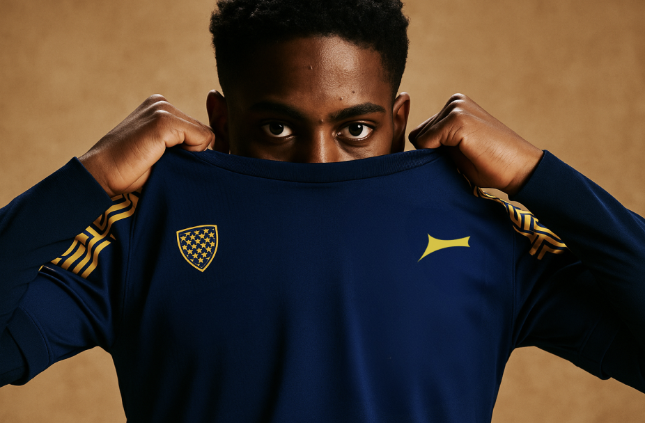
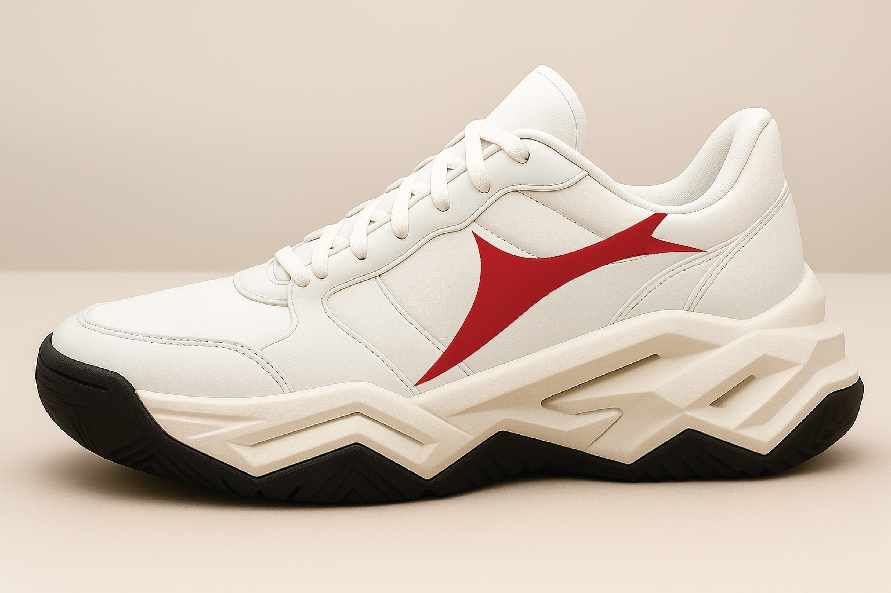
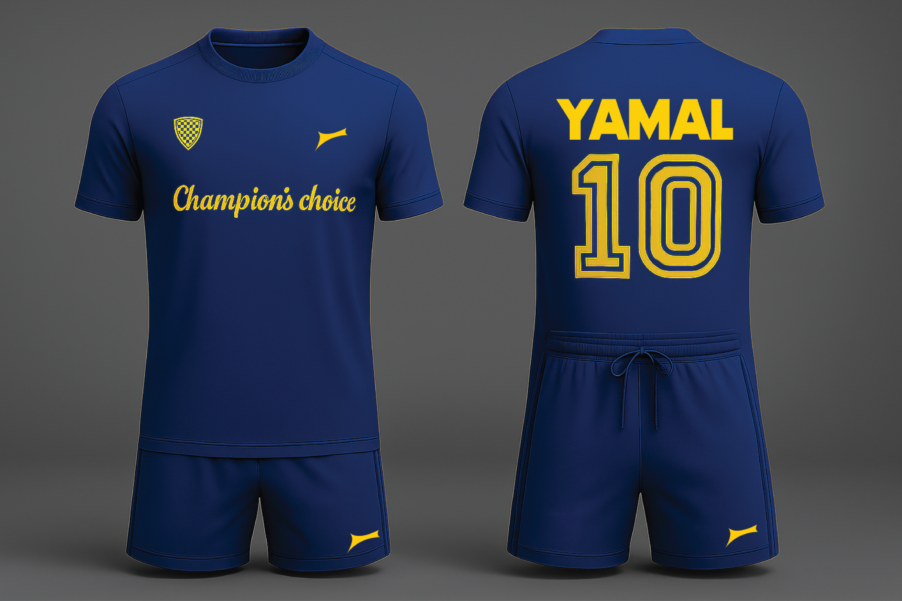
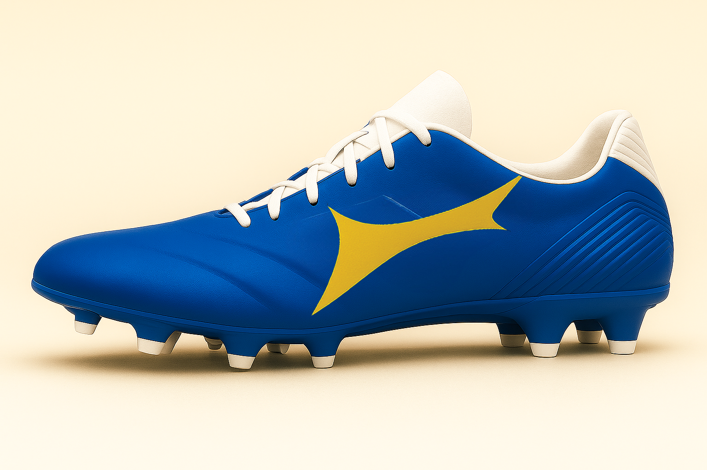
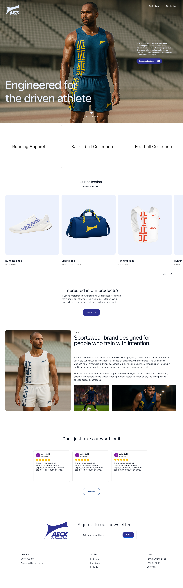

Role
Graphic designer
Timeline
4 weeks
Tools
Adobe Illustrator, Photoshop, Figma
Type
Internship project
Making logos, mockups and a landing page for a new up and coming sportbrand: Aeck

Graphic designer
4 weeks
Adobe Illustrator, Photoshop, Figma
Internship project
As part of my internship, I collaborated with a sportswear brand called AECK to redesign its visual identity and strengthen its brand presence. The project involved creating a new logo, developing a cohesive brand identity, designing apparel mockups, and building a landing page that reflected the brand's vision.
The challenge was to create a modern and recognizable identity that appealed to athletes and fitness enthusiasts while remaining true to the company's values. The new branding needed to feel premium, energetic, and versatile enough to be applied across both digital and physical touchpoints.
A key aspect of the project was balancing creative ideas with the client's expectations. Throughout the process, there was continuous communication with the company owner, requiring flexibility and the ability to translate feedback into practical design decisions.
I approached the project by first exploring different visual directions for the brand identity. After researching current sportswear trends and AECK's market position, I developed several logo concepts and branding styles that emphasized movement, performance, and simplicity.
Once a direction was chosen, I expanded the identity into a complete branding system. This included creating realistic sportswear mockups to demonstrate how the logo and brand elements would appear on clothing, as well as designing a responsive landing page that introduced the brand and its products in a clean and engaging way.


some mockups made

Each design decision was made to create a consistent experience across every brand touchpoint. Strong typography, a bold visual language, and a minimal color palette helped communicate a professional and athletic image while allowing the products to remain the primary focus.

Landing page Aeck
The project began with research into competing sportswear brands, visual trends, and the existing AECK identity. This helped identify opportunities to create a brand that felt distinctive while remaining relevant within the fitness market.
From there, I produced multiple logo explorations, branding concepts, and layout ideas. Throughout the project, I presented my work to the company owner, gathered feedback, and refined the designs based on discussions. Several concepts went through multiple revisions before reaching the final direction, making iteration an essential part of the process.
Designing the clothing mockups allowed me to test how the branding would function in a real-world context, while creating the landing page ensured the visual identity translated seamlessly into a digital experience. This project strengthened my skills in branding, client communication, and designing across multiple platforms while working closely with a real client.